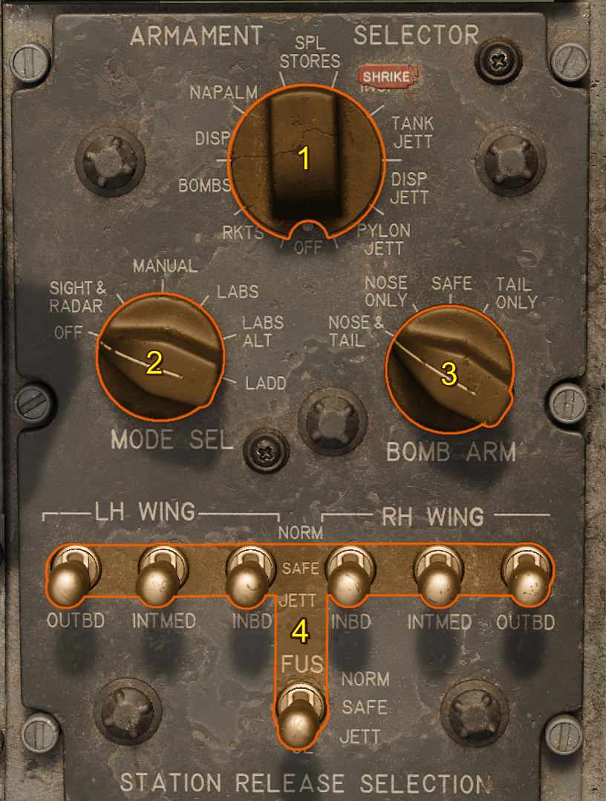
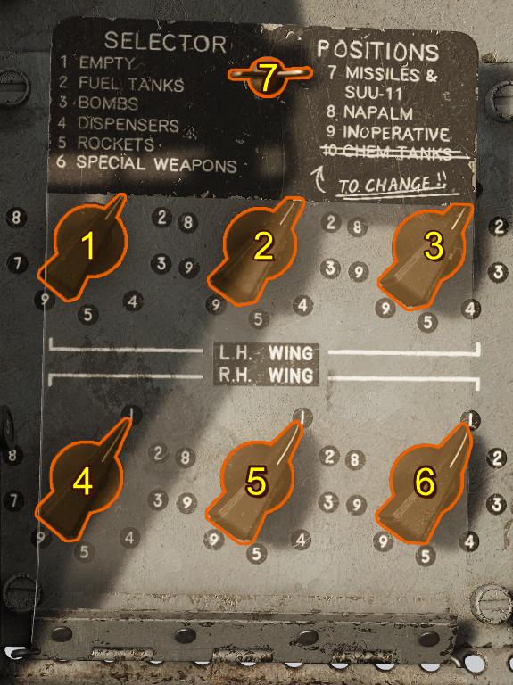
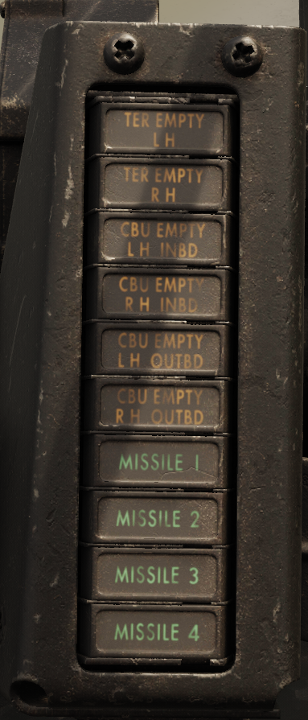

Weapon Selection Circuitry
The weapon release circuitry handle all weapon releases from the aircraft both armed and jettison.
The F-100D has a novel method of selecting weapons for the time. The pilot selects the release mode and then the weapon type. The system will automatically select the correct pylons provided those pylons are armed. This is facilitated by the pylon loading control panel which stores the weapon type mounted on each pylon by method of a multiposition switch.
Selecting release modes and weapons is achieved by using the armament selector panel.
Armament Selector Panel
This panel is responsible for:
- Selecting weapons
- Sight and Bombing Modes
- Fuzing Options
- Pylon Selection

Stores Selector
This selects the desired weapons to be released. When a store type is selected the pylons selected for release are determined by the Pylon Loading Control Panel settings. Stores with matching types are armed for release.
Mode Selector
This determines the release type for air-to-ground weapons. The sight and radar are powered in any position other than OFF.
| Position | Description |
|---|---|
| OFF | Weapons, Sight and Radar are unpowered. |
| SIGHT & RADAR | Sight and Radar are Powered and can be used with guns or missiles. Bomb button is energized for release using the gunsight bomb release mode. |
| MANUAL | Sight and Radar are Powered. Bomb-button is energized and can send release pulses to either the Aircraft Weapons Release System if on, otherwise the Basic Armament Control Circuitry. This mode directly sends pulses to release weapons. |
| LABS | Sight and Radar are Powered. Bomb-button is energized and can send activation signals to the LABS for the normal LABS mode (LOFT). |
| LABS ALT | Sight and Radar are Powered. Bomb-button is energized and can send activation signals to the LABS for the alternate LABS mode (Over-the-Shoulder). |
| LADD | Sight and Radar are Powered. Bomb-button is energized and can send activation signals to the LABS for the low altitude drogue delivery LABS mode. |
Bomb Arm Switch
This controls the bomb-arming solenoids in the pylons. This only affects bomb and napalm arming.
| Setting | Fuzes | High Drag Tail Kit Deployed (if bomb has one) |
|---|---|---|
| SAFE | NONE | NO |
| NOSE | NOSE, CENTER | NO |
| TAIL | TAIL, CENTER | YES |
| NOSE & TAIL | NOSE, CENTER, TAIL | YES |
Station Release Selection Switches
These 7 switches simply break the circuit between the aircraft systems and the pylon firing or jettisoning circuitry. When a pylon is in the NORM position the release circuitry is used. When a pylon is in the JETT position the jettison circuitry is instead used. It is advisable to turn all switches to NORM when arming the weapons system as the stores selector will select the correct weapons for drop.
Warning
Turning these switches off do not remove them from the Aircraft Weapons Release System Circuit firing order. Thus disabling some of these while using the AWRS can result in a hung weapon release sequence.
Pylon Loading Control Panel
This panel stores the weapon type information mounted on each pylon as a 7 position switch such that the Armament Selector Panel can correctly select pylons by weapon type.

- Left Inboard Weapon Setting
- Left Intermediate Weapon Setting
- Left Outboard Weapon Setting
- Right Inboard Weapon Setting
- Right Intermediate Weapon Setting
- Right Outboard Weapon Setting
- Pylon Loading Control Panel Latch and Cover
The controls 1-6 all control what the wiring considers mounted to the aircraft. These are automatically set by ground grew upon re-arm or spawn (by default see special options).
Caution
Setting any of these to incorrect loading may result in in-advertent release of weapons.
Note
If automatic pylon loading control panel setting is set in the special options then these will be set by the ground crew when the rearming complete radio message is received.
There are 1-9 possible weapon mountings. These mostly match the weapon types found on the Stores Selector.
| Number | Ordinance | Notes |
|---|---|---|
| 1 | Empty | Nothing Loaded |
| 2 | Fuel Tanks | Important for G-Limit and Jettison |
| 3 | Bombs | |
| 4 | Dispensers | |
| 5 | Rockets | |
| 6 | Special Weapons | Nuclear Ordinance |
| 7 | Missiles | This is functionally the same as empty as the missiles are not control by the armament control panels |
| 8 | Napalm | |
| 9 | Inoperative | Functionally the same as Empty. With the exception of the inner pylons where this indicates the presence of shrikes. |
Status Display Lights
The status display lights indicate various information about the current state of the weapon system.

| Light | Purpose |
|---|---|
| TER EMPTY | This indicates (if a TER is mounted on an inner pylon) if a TER is empty of bombs |
| CBU EMPTY | This indicates (if a CBU Dispenser is mounted) if the CBU dispenser is fully depleted |
| Missile | This indicates if a missile is ready to be fired. The missiles are listed in firing order. |